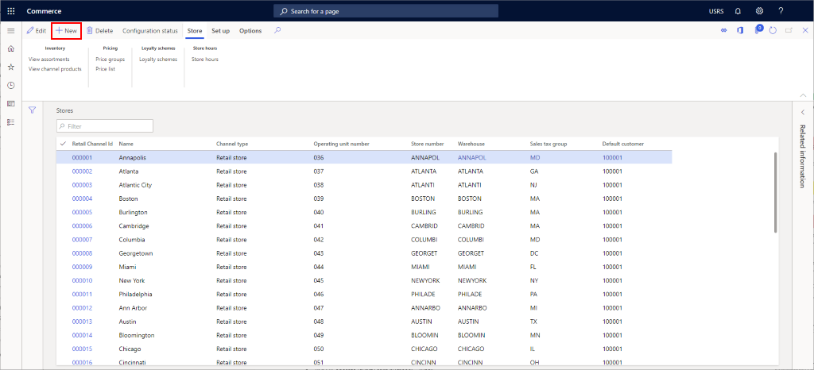
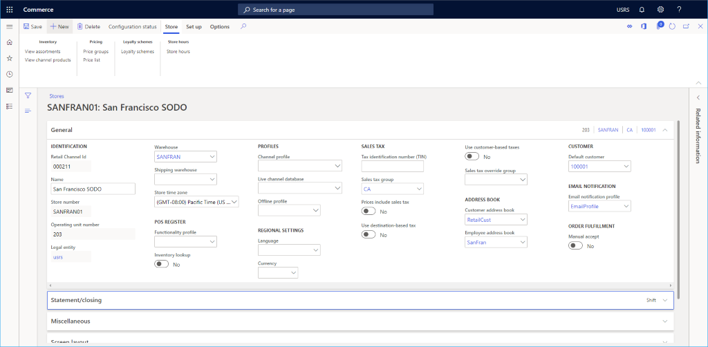
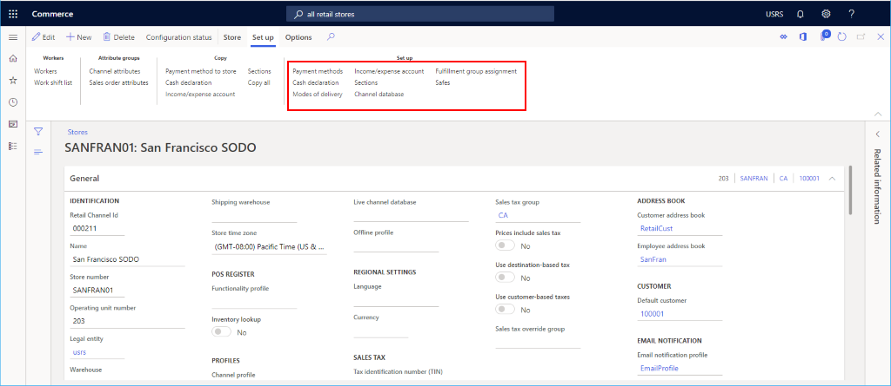
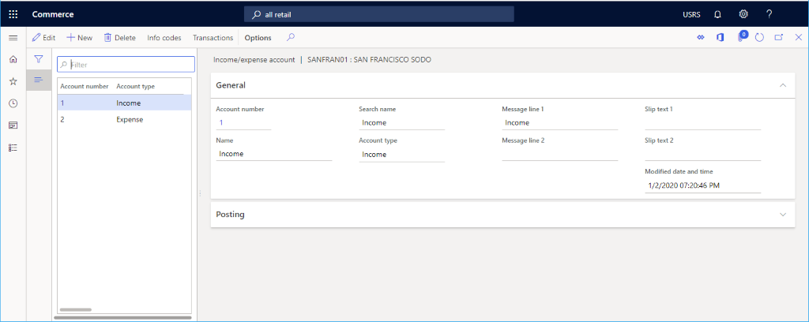

Einen Retail Channel einrichten
Important
Dynamics 365 Retail ist jetzt Dynamics 365 Commerce und bietet umfassende Handelsfunktionen für alle Kanäle – von E-Commerce über Shops bis hin zu Callcentern. Weitere Informationen zu diesen Änderungen finden Sie unter Microsoft Dynamics 365 Commerce.
In diesem Thema wird beschrieben, wie Sie einen neuen Retail Channel in Microsoft Dynamics 365 Commerce erstellen.
Übersicht
Dynamics 365 Commerce unterstützt mehrere Retail Channels. Diese Vertriebskanäle umfassen Onlineshops, Callcenter und Einzelhandelsgeschäfte (auch physische Läden genannt). Jeder Einzelhandelskanal kann seine eigenen Zahlungsmethoden, Preisgruppen, POS-Register, Ein- und Ausgabenkonten und Mitarbeiter einrichten. Sie müssen alle Elemente einrichten, bevor Sie ein Ladengeschäftskanal erstellen können.
Stellen Sie vor dem Erstellen eines Retail Channel sicher, dass Sie die folgenden Kanalvoraussetzungen befolgen.
Einen neuen Retail Channel erstellen und konfigurieren
- Gehen Sie im Navigationsbereich zu Module > Kanäle > Geschäfte >Alle Geschäfte.
- Wählen Sie im Aktivitätsbereich Neu aus.
- Geben Sie im Feld Name einen Namen für den neuen Kanal ein.
- Wählen Sie im Feld Shopnummer eine einmalige Shopnummer aus. Die Nummer kann alphanumerisch mit maximal 10 Zeichen sein.
- Geben Sie in der Dropdown-Liste Juristische Person die entsprechende juristische Person ein.
- Geben Sie in der Dropdown-Liste Lagerort den entsprechenden Lagerort ein.
- Wählen Sie im Feld Zeitzone des Shops die entsprechende Zeitzone aus.
- Wählen Sie in der Dropdown-Liste Umsatzsteuergruppe eine entsprechende Umsatzsteuergruppe für das Geschäft aus.
- Wählen Sie im Feld Währung die entsprechende Währung aus.
- Geben Sie im Feld Kundenadressbuch ein gültiges Adressbuch an.
- Geben Sie im Feld Standardkunde einen gültigen Standardkunden an.
- Wählen Sie im Feld Funktionsprofil gegebenenfalls ein Funktionsprofil aus.
- Geben Sie in das Feld E-Mail-Benachrichtigungsprofil ein gültiges E-Mail-Benachrichtigungsprofil ein.
- Wählen Sie im Aktionsbereich Speichern aus.
Das folgende Bild zeigt die Erstellung eines neuen Retail Channel.

Das folgende Bild zeigt ein Beispiel für einen Retail Channel.

Andere Einstellungen
Es gibt zahlreiche andere optionale Einstellungen, die in den Abschnitten Auszug/Abschluss und Sonstiges basierend auf den Bedürfnissen des Einzelhandelsgeschäfts eingestellt werden können.
Darüber hinaus siehe Bildschirmlayouts für den Point of Sale (POS)für Informationen zum Einrichten des Standard-Bildschirmlayouts im Abschnitt Bildschirmlayout und konfigurieren und installieren Sie die Retail Hardware station (This is an external link) für Informationen zum Einrichten über den Abschnitt Hardwarestationen.
Das folgende Bild zeigt ein Beispiel für einen Retail Channel-Einrichtungskonfiguration.

Einrichtung eines zusätzlichen Kanals
Für einen Kanal, der im Aktionsbereich im Abschnitt Einrichtung zu finden ist, müssen zusätzliche Elemente eingerichtet werden.
Zusätzliche Aufgaben, die für das Einrichten des Onlinekanals erforderlich sind, umfassen das Einrichten von Zahlungsmethoden, Bargelddeklaration, Lieferarten, Einnahmen-/Aufwandskonto, Abteilungen, Erfüllungsgruppenzuweisungen und Safes.
Das folgende Bild zeigt verschiedene zusätzliche Optionen zum Einrichten von Retail Channels auf der Registerkarte Einrichten.

Einrichten von Zahlungsmethoden
Führen Sie die folgenden Schritte aus, um die Zahlungsmethoden für jede auf diesem Kanal unterstützte Zahlungsart einzurichten.
- Wählen Sie im Aktionsbereich die Registerkarte Einrichten und dann Zahlungsmethoden.
- Wählen Sie im Aktivitätsbereich Neu aus.
- Wählen Sie im Navigationsbereich eine gewünschte Zahlungsmethode aus.
- Geben Sie im Abschnitt Allgemeines einen Operationsname an und konfigurieren Sie alle anderen gewünschten Einstellungen.
- Konfigurieren Sie ggf. zusätzliche Einstellungen für die Zahlungsart.
- Wählen Sie im Aktionsbereich Speichern aus.
Das folgende Bild zeigt ein Beispiel für eine Bargeldzahlungsmethode.

Bargelddeklaration einrichten
- Wählen Sie im Aktionsbereich die Registerkarte Einrichten und dann Bargelddeklaration.
- Wählen Sie im Aktionsbereich Neu aus und erstellen Sie dann alle zutreffenden Denominationen Münze und Hinweis.
Das folgende Bild zeigt ein Beispiel für eine Bargelddeklaration.

Lieferarten einrichten
Sie können die konfigurierten Zustellmodi anzeigen, indem Sie Lieferarten aus der Registerkarte Einrichten im Aktionsbereich auswählen.
Gehen Sie folgendermaßen vor, um eine Lieferart zu ändern oder hinzuzufügen.
- Gehen Sie im Navigationsbereich zu Module > Bestandsverwaltung > Lieferarten.
- Wählen Sie im Aktionsbereich Neu aus, um eine neue Lieferart zu erstellen oder wählen Sie einen vorhandenen Modus aus.
- Im Abschnitt Retail Channels wählen Sie Zeile hinzufügen aus, um den Kanal hinzuzufügen. Durch das Hinzufügen von Kanälen mithilfe von Organisationsknoten, anstatt jeden Kanal einzeln hinzuzufügen, kann das Hinzufügen von Kanälen rationalisiert werden.
Das folgende Bild zeigt ein Beispiel für eine Lieferart.

Einnahmen-/Aufwandskonto einrichten
Gehen Sie zum Einrichten eines Einnahmen-/Aufwandskontos folgendermaßen vor:
- Wählen Sie im Aktionsbereich die Registerkarte Einrichten und dann Einnahmen-/Aufwandskonto.
- Wählen Sie im Aktivitätsbereich Neu aus.
- Geben Sie unter Name einen Namen ein.
- Geben Sie unter Suchbegriff einen Suchbegriff ein.
- Geben Sie unter Kontenart die Kontenart ein.
- Geben Sie den Text für die Meldungszeile 1, Meldungszeile 2, Belegtext 1 und Belegtext 2 ein.
- Geben Sie unter Posten die Buchungsinformationen ein.
- Wählen Sie im Aktionsbereich Speichern aus.
Die folgende Abbildung zeigt ein Beispiel für ein Einnahmen-/Ausgabenkonto.

Abschnitte einrichten
Gehen Sie zum Einrichten von Abschnitten folgendermaßen vor:
- Wählen Sie im Aktionsbereich die Registerkarte Einrichten aus und klicken Sie dann auf Abschnitte.
- Wählen Sie im Aktivitätsbereich Neu aus.
- Geben Sie unter Abschnittsnummer eine Abschnittsnummer ein.
- Geben Sie unter Beschreibung eine Beschreibung ein.
- Geben Sie unter Abschnittsgröße eine Abschnittsgröße ein.
- Konfigurieren Sie zusätzliche Einstellungen für Allgemeines und Verkaufsstatistik.
- Wählen Sie im Aktionsbereich Speichern aus.
Eine Erfüllungsgruppenzuweisung einrichten
Gehen Sie zum Einrichten einer Erfüllungsgruppe folgendermaßen vor:
- Wählen Sie im Aktionsbereich die Registerkarte Einrichten und dann Erfüllungsgruppenzuweisung aus.
- Wählen Sie im Aktivitätsbereich Neu aus.
- Wählen Sie in der Dropdown-Liste Erfüllungsgruppe eine Erfüllungsgruppe aus.
- Geben Sie in der Dropdown-Liste Beschreibung eine Beschreibung ein.
- Wählen Sie im Aktionsbereich Speichern aus
Die folgende Abbildung zeigt ein Beispiel für die Einrichtung einer Erfüllungsgruppenzuweisung.

Safes einrichten
Gehen Sie zum Einrichten von Safes folgendermaßen vor:
- Wählen Sie im Aktionsbereich die Registerkarte Einrichten aus und klicken Sie dann auf Safes.
- Wählen Sie im Aktivitätsbereich Neu aus.
- Geben Sie einen Namen für den Safe ein.
- Wählen Sie im Aktionsbereich Speichern aus.